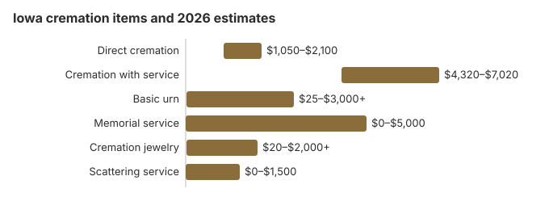

Cremation Costs in Iowa (2026)
About half of Iowa deaths, 50%, now end in cremation, and direct cremation near $1,500 sits far below the $6,700 typical of a full traditional funeral. Iowa defines cremation in Iowa Code §156.1 as reducing remains to bone fragments by heat and flame. For unclaimed ashes, §144.27 lets a funeral director, after 180 days, ask the Department of Veterans Affairs whether the person was a veteran eligible for a veterans cemetery. The sections below cover Iowa prices and rules.
Iowa Cremation Options
Direct Cremation
- Lowest price of the Iowa choices
- No ceremony comes first
- Transferred straight to the crematory
- The family gets the ashes
- A memorial may be held later
Cremation with Service
- A funeral precedes the cremation
- Visitation can be arranged
- In a funeral home or church
- Usually includes a basic urn
- Most like a traditional funeral
Iowa Cremation Prices
| Item | Iowa estimate | Low to high |
|---|---|---|
| Direct cremation | $1,500 | $1,050 – $2,100 |
| Cremation with service | $5,400 | $4,320 – $7,020 |
| Basic urn | $50 – $300 | $25 – $3,000+ |
| Memorial service | $500 – $2,000 | $0 – $5,000 |
| Cremation jewelry | $50 – $500 | $20 – $2,000+ |
| Scattering service | $200 – $600 | $0 – $1,500 |
About the Iowa numbers: nobody canvassed Iowa crematories for them. They are model estimates meant as a yardstick, which makes them no substitute for a written quote or professional advice. Check our method to see how they are made, and the disclaimer.
State sources: Iowa Department of Inspections, Appeals, and Licensing; Iowa Code §§ 252.25, 252.27.

Spending Less on an Iowa Cremation
Two ways to keep the cost down:
- Compare three written price lists. An Iowa funeral home must give out its General Price List, and the direct cremation line is the one to set beside the others.
- Ask for the direct cremation price alone. Iowa homes sometimes fold it into a package, so ask what the plain cremation costs and whether the medical examiner's permit fee, up to $75, is included.
Before You Sign in Iowa
Things to check with an Iowa provider:
- Get the General Price List first. Its direct cremation line must say what is included, which should be the transfer, the cremation and a simple container for the ashes.
- Iowa families do not need a casket for direct cremation: under the FTC Funeral Rule (16 CFR 453.3(b)) the provider must allow an unfinished wood box or another alternative container.
- Ask how long the crematory usually needs after the medical examiner signs off and if the price covers delivery of the ashes or only pickup.
Cremation and Burial Costs in Iowa
Price is the main gap: our Iowa estimates put direct cremation at about $1,500, roughly $5,200 below a traditional burial. Quotes for the same direct cremation can differ from one Iowa provider to the next, so ask more than one.
Cremation Resources
- Funeral Consumers AllianceNonprofit advocacy: compare cremation providers
- Cremation Jewelry GuideMemorial keepsakes and remembrance options
- Cremation vs. Burial CostsSide-by-side cost comparison
- Pet Cremation CostsOptions and prices for pet cremation and memorials
- Final Expense InsuranceCoverage options to help pay for cremation costs
Compare Funeral Costs
- Average Funeral Cost in 2026National cost breakdown with real prices
- Cremation vs. Burial Cost ComparisonSide-by-side price comparison to help you decide
- Funeral Cost BreakdownEvery line item explained: know what you're paying for
- Cheapest Funeral OptionsLower-cost alternatives, with typical price ranges
- Direct Cremation: Most Affordable OptionNFDA 2023 median $2,645 with a family-supplied container (latest available)
- How to Compare Funeral PricesStep-by-step guide to getting the best price
Frequently Asked Questions
What does an Iowa cremation cost?
In Iowa we estimate about $1,500 when nothing is held beforehand and about $5,400 if a funeral precedes the cremation.
Which cremation services can an Iowa family buy?
Iowa homes mainly sell two packages. Direct cremation at about $1,500 has no service or viewing. Adding a funeral beforehand brings it to about $5,400, a $3,900 step up. Some families instead pair a direct cremation with a memorial they arrange themselves.
What does Iowa require before a cremation?
Iowa sets no waiting period, but a county or state medical examiner must issue a cremation permit first (Iowa Code § 331.805(3)(b)), and only a licensed funeral director may arrange the cremation. The crematory also needs the death certificate and a signed authorization. The state licensing office and its phone number appear in the oversight section.
Where may ashes be scattered in Iowa?
Yes, but Iowa is stricter than many states. The public health rule on disposition, 641 IAC 97.13(3), makes scattering subject to local ordinances and cemetery rules, does not allow it on public property, and requires the owner's consent on private property. Cremation is itself treated as final disposition, so no further burial-transit permit is needed to take the remains home or to a scattering site.
If you want a cemetery scattering garden, ask the cemetery about its fee and whether family may be present. Crematory complaints go to the Iowa Department of Inspections, Appeals, and Licensing (515-229-3939).
How common is cremation in Iowa?
About half, using our 50% figure, against the 63.4% national rate NFDA projected for 2025. The savings are large for those who choose it: about $1,500 for direct cremation in Iowa against about $6,700 for the funeral service with a traditional burial. There is no waiting period, but the medical examiner's permit comes first (Iowa Code § 331.805).
How soon can an Iowa cremation be done?
The permit sets the pace. With no service to arrange, a direct cremation at $1,500 waits only for the county or state medical examiner's permit; Iowa sets no fixed waiting period (Iowa Code § 331.805(3)(b)). A permit can be held up if the examiner cannot reach the physician, so ask the provider when to expect the ashes.
Is there room for a funeral before an Iowa cremation?
Yes. Our Iowa estimate for a funeral and then cremation is about $5,400, with most quotes between $4,320 and $7,020; a direct cremation is about $1,500. The difference covers the visitation, the service and a casket, which can be rented.
Iowa's rules leave room for a service: an unembalmed body may be held 72 hours after death, or 24 hours after the funeral home takes custody, and refrigeration at 38 to 42°F adds another 72 hours (481 IAC 900.6(3)). The medical examiner's permit must still be issued before cremation.
More for Iowa
What Iowa's medical examiner cremation permit costs
Iowa caps what the medical examiner can charge for its cremation permit. The fee can be no more than $75, and the permit and other reasonable cremation expenses may be paid from the person's estate (Iowa Code § 331.805(3)(b); checked October 29, 2026). Under rules effective April 1, 2026, the family, next of kin or another person acting for the deceased pays the fee, and the permit is completed in the state's electronic death registry (Iowa Admin. Code 641—127.6).
- What the examiner checks: the county medical examiner looks into the cause and manner of death before issuing the permit. The examiner has to view the body only if the death may be one of the kinds the law treats as a public-interest case, such as a violent or unexplained death.
- In practice: in Polk County, an investigator goes to the crematory and examines the body if the death is not already a medical examiner case, then calls the physician. If the physician cannot be reached right away, the permit can be delayed.
Iowa licensing, permits and county assistance
Iowa licenses crematories and funeral directors through the Iowa Department of Inspections, Appeals, and Licensing (515-229-3939), which also takes complaints.
Iowa is one of the nine states the Funeral Consumers Alliance lists as restricting family-directed care: state law reserves arranging a cremation for a licensed funeral director (Iowa Code § 331.805; Iowa Admin. Code 481-900.10(2)), so even the $1,500 direct cremation in our table goes through a licensee.
No waiting period applies, but a county or state medical examiner must first issue the cremation permit (Iowa Code § 331.805(3)(b)).
County general assistance
Iowa leaves funeral help to each county board of supervisors, which sets the form and amount of general assistance; the code caps burial of a nonresident transient at $250, and counties set their own figures for residents, such as Linn County's $1,000 (Iowa Code §§ 252.25, 252.27). Social Security's one-time $255, paid only to an eligible spouse or child, would leave about $1,245 of a $1,500 direct cremation to find elsewhere.
Ashes of an eligible Iowa veteran may be placed at Keokuk National Cemetery (319-524-5193) or the Iowa Veterans Cemetery near Van Meter (515-727-3444), and the space costs nothing; see cem.va.gov.
Iowa checklist
- Get written prices from at least two providers and compare what each direct cremation includes.
- Ask which medical examiner will issue the permit and what it charges; the cap is $75.
- Ask the county general assistance office whether it pays toward a cremation before you choose a provider.
- If ashes go unclaimed for 180 days, a funeral director may ask the Iowa Department of Veterans Affairs whether the person qualified for a veterans cemetery (Iowa Code § 144.27), so tell the provider about any service record.
- Keep the licensing office's number, 515-229-3939, for a complaint.